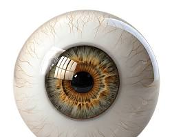

Triagem Inteligente de Retinografia em Segundos
Utilizamos inteligência artificial para auxiliar oftalmologistas no diagnóstico precoce de patologias oculares.
Utilizamos inteligência artificial para auxiliar oftalmologistas no diagnóstico precoce de patologias oculares.
O OcularHub Vision não substitui o médico, mas fornece uma segunda opinião baseada em milhares de casos analisados. Ganhe tempo na triagem e foque no tratamento do paciente.

Algoritmos treinados para identificar sinais sutis em exames de retina com alta precisão.